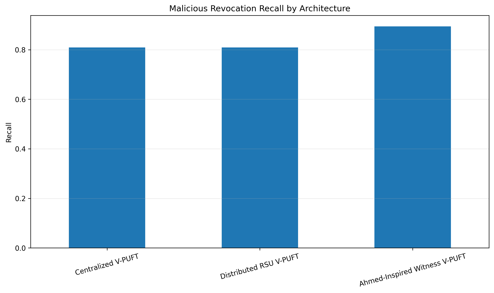
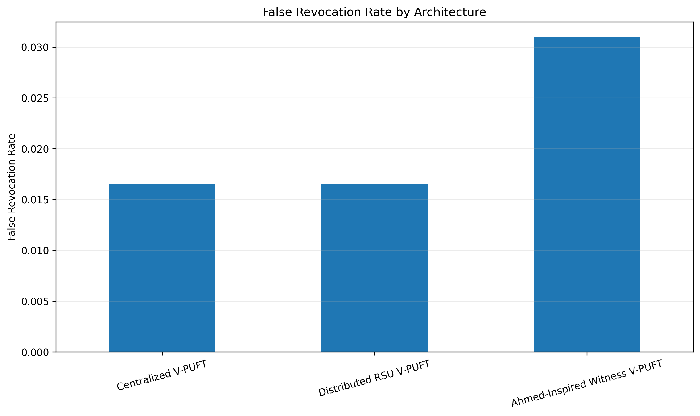
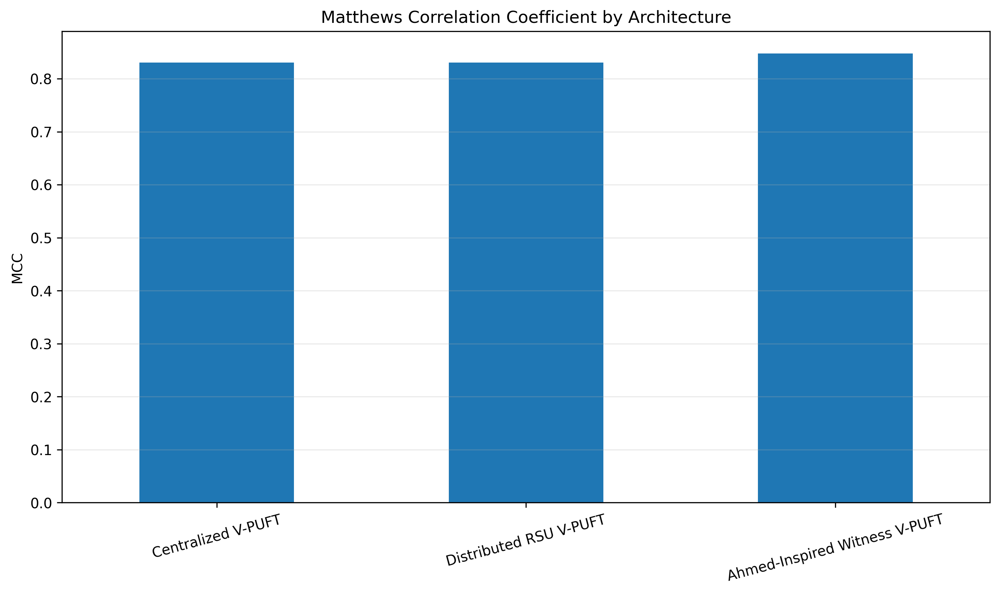
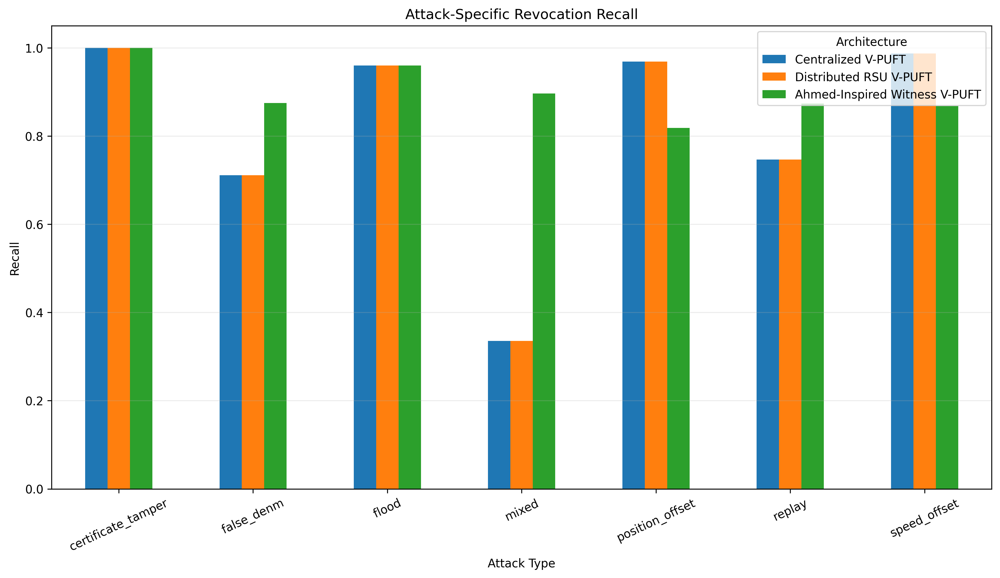
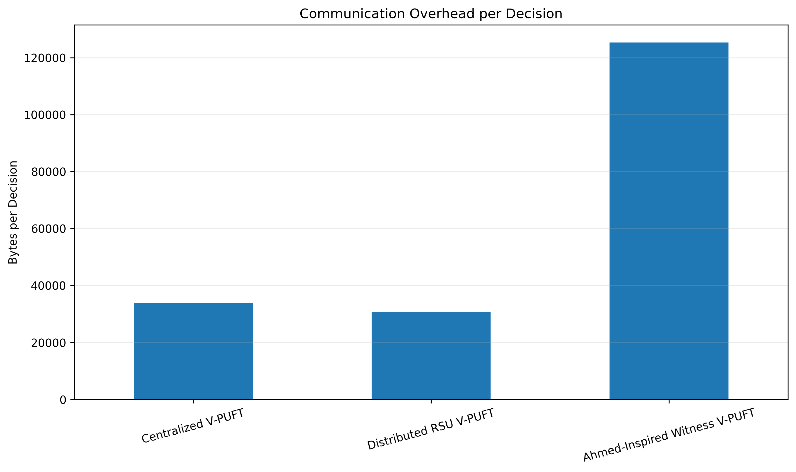
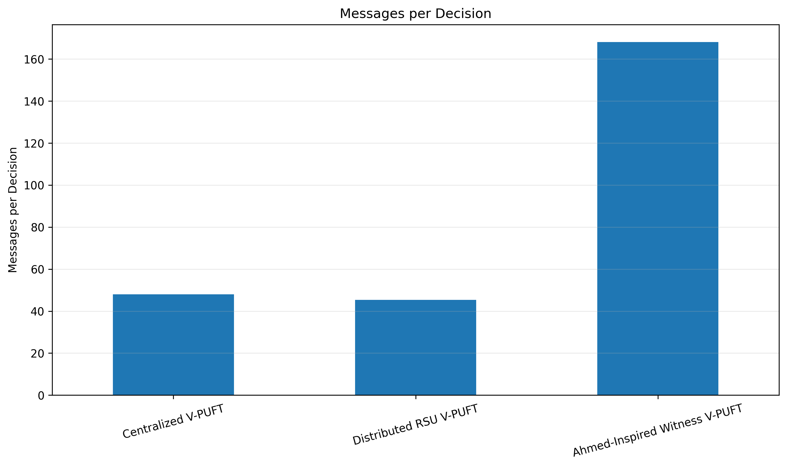
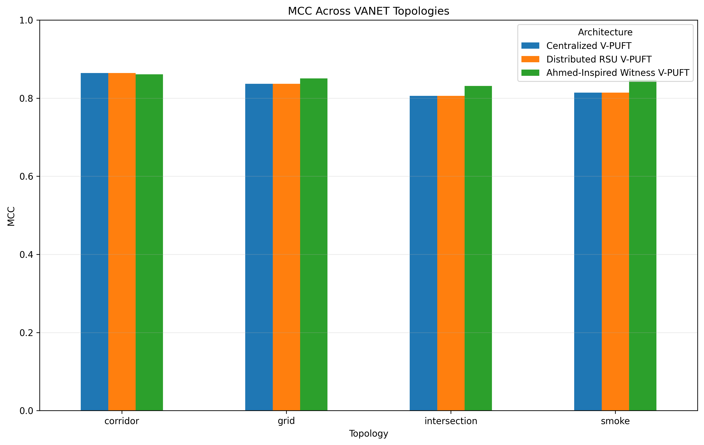
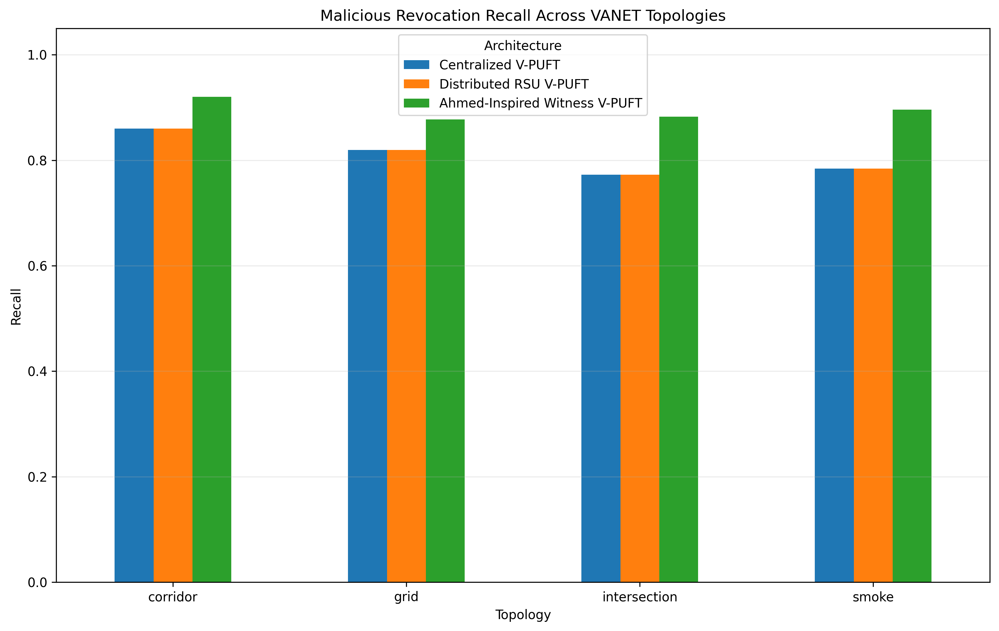

الفصل الخامس: النتائج والمناقشة
Performance Evaluation of Blockchain-Based VANETs
محتويات الفصل
- 5.1 مقدمة
- 5.2 تثبيت التجربة وصلاحية النتائج
- 5.3 بيئة المقارنة والمعماريات
- 5.4 مؤشرات التقييم
- 5.5 نموذج تأهيل الأدلة في V-PUFT
- 5.6 المعايرة واختيار الأوزان
- 5.7 التصحيحات المنهجية قبل التجميد
- 5.8 النتائج الإجمالية
- 5.9 تحليل Recall وPrecision وFRR
- 5.10 تحليل MCC وF1
- 5.11 الأداء حسب نوع الهجوم
- 5.12 تحليل زمن الاستجابة
- 5.13 كلفة الاتصالات
- 5.14 PBFT وسلامة السجل
- 5.15 استهلاك الموارد
- 5.16 المقارنة حسب الطوبولوجيا
- 5.17 مقارنة Centralized وDistributed RSU
- 5.18 المفاضلة الأمنية-التشغيلية
- 5.19 أهم الاستنتاجات
- 5.20 حدود الدراسة
- 5.21 خلاصة الفصل
5.1 مقدمة
يقدم هذا الفصل النتائج النهائية للتجارب التي أجريت لتقييم ثلاثة مسارات تشغيلية لإطار الثقة V-PUFT ضمن شبكات المركبات اللاسلكية المعتمدة على سلاسل الكتل. ولا تهدف المقارنة إلى اختبار ثلاث خوارزميات ثقة مختلفة. ويفصل الاستدلال بين مقارنة Centralized↔Distributed RSU التي تثبت منظور RSU وتوفر أنظف مقارنة لدراسة طبقة الإنهاء، وبين مقارنة Ahmed-Inspired↔RSU التي تغيّر مسار الأدلة/الاستشعار كحزمة متكاملة ولا تُقرأ كتجربة سببية أحادية المتغير.
تمت دراسة ثلاث معماريات: معمارية مركزية، ومعمارية موزعة تعتمد على وحدات الطريق RSUs مع إجماع PBFT، ومعمارية موزعة تعتمد على تقارير الشهود من المركبات ومستوحاة معمارياً من نموذج Ahmed وآخرين، مع بقاء محرك V-PUFT مسؤولاً عن تأهيل الأدلة وقرار الثقة.
يركز التحليل على أربعة محاور مترابطة: جودة كشف السلوك الخبيث، احتمال الإلغاء الخاطئ للمركبات السليمة، زمن اتخاذ القرار، وكلفة الاتصالات والموارد. كما يفصل الفصل بين الأداء الإجمالي والأداء حسب نوع الهجوم حتى لا يخفي المتوسط العام نقاط القوة والضعف الخاصة بكل معمارية.
5.2 تثبيت التجربة وصلاحية النتائج
قبل اعتماد النتائج تم إنشاء نسخة تجميد نهائية للمشروع والنتائج، وتم التحقق من سلامة الملفات الأساسية باستخدام بصمات SHA-256. كما تم تشغيل اختبارات المشروع النهائية بصورة مستقلة على مجلد الاختبارات الأصلي: جُمِع 32 اختباراً، نجح منها 31 وتُخطي اختبار تكامل SUMO/TraCI واحد لعدم توفر البيئة المطلوبة، من دون اعتباره فشلاً.
استخدمت النسخة النهائية حملة SUMO الأصلية نفسها، ولم تتم إعادة تشغيل SUMO بعد التصحيحات المنهجية المتأخرة. وبدلاً من ذلك أعيد بناء أو إعادة تشغيل المراحل المتأثرة فقط، مثل تشكيل الحالات في وقت التشغيل، معايرة الأوزان، وإعادة تشغيل المعماريات على الأدلة نفسها. يساعد ذلك على منع إدخال اختلاف جديد في الحركة المرورية عند مقارنة النتائج قبل التصحيح وبعده.
5.3 بيئة المقارنة والمعماريات
5.3.1 المعمارية المركزية Centralized V-PUFT
في هذه المعمارية ترسل الأدلة المتاحة إلى خادم مركزي، ويقوم محرك V-PUFT بتقييم الأدلة واتخاذ قرار الثقة. لا تستخدم هذه المعمارية PBFT، ولذلك فإن مؤشرات الإجماع غير مطبقة عليها. ميزتها الأساسية هي بساطة مسار القرار وقلة طبقات التنسيق، بينما تبقى نقطة الاعتماد المركزية من أهم القيود البنيوية.
5.3.2 المعمارية الموزعة Distributed RSU V-PUFT
تعتمد هذه المعمارية على وحدات RSU. يحتفظ المنسق بالأدلة المحلية، بينما يجب أن تصل أدلة RSU البعيدة عبر رسائل تبادل مخصصة قبل أن تدخل مرحلة التأهيل. وعند نجاح التأهيل، يمر القرار بمرحلة PBFT لتثبيته في السجل الموزع.
5.3.3 Ahmed-Inspired Witness V-PUFT
تعتمد هذه المعمارية على تقارير شهود من المركبات. يجب أن يصل تقرير الشاهد أولاً إلى RSU المدقق الخاص به، ثم تنتقل الأدلة البعيدة إلى المنسق عند الحاجة. بعد ذلك يطبق محرك V-PUFT قواعد التأهيل، ثم يستخدم PBFT لإنهاء القرار.
5.4 مؤشرات التقييم
5.4.1 Precision
تقيس نسبة قرارات الإلغاء التي كانت صحيحة فعلاً. ارتفاعها يعني أن النظام أكثر تحفظاً في اتهام المركبات السليمة.
5.4.2 Malicious Revocation Recall
يقيس نسبة الحالات الخبيثة التي تمكن النظام من اكتشافها وإلغائها. وهو من أهم المقاييس الأمنية لأنه يعكس قدرة النظام على منع السلوك الخبيث من الاستمرار.
5.4.3 False Revocation Rate
يقيس نسبة الحالات السليمة التي تم إلغاؤها خطأ. كلما انخفضت القيمة كان النظام أقل ميلاً لإلحاق الضرر بالمركبات الشرعية.
5.4.4 F1 وMCC
استخدم MCC خصوصاً لأنه يدمج الحالات الأربع للمصفوفة الالتباسية، ويقلل خطر تفسير نظام مرتفع Recall على أنه متفوق إذا كان ذلك على حساب عدد كبير من الإلغاءات الخاطئة.
5.4.5 مؤشرات الأداء التشغيلي
- زمن الكشف والتأهيل والإجماع.
- زمن القرار النهائي عند P50 وP95 وP99.
- عدد الرسائل لكل قرار.
- عدد البايتات لكل قرار.
- معدل تسليم الحزم PDR وإعادات الإرسال.
- زمن الانتظار في الطوابير.
- زمن المعالج والذاكرة القصوى.
- نجاح الإجماع وسلامة السجل.
5.5 نموذج تأهيل الأدلة في V-PUFT
يعتمد V-PUFT على وزن لكل شهادة دليل، ولا يعامل جميع الأدلة باعتبارها متساوية. استخدمت الدراسة العلاقة:
تمثل العوامل على الترتيب: صلاحية الدليل، ثقة الكاشف، موثوقية المصدر، الحداثة، قابلية التحقق، والاستقلالية. ويضاف إلى الوزن شرط بنيوي مستقل للتنوع، بحيث لا يكفي رفع مجموع الأوزان إذا كانت الأدلة نسخاً مشتقة من جذر ملاحظة واحد.
تجمع الأدلة المرتبطة بالـ observation_root_id نفسه في جذر واحد، وبالتالي لا يمكن لرسائل مشتقة من الملاحظة نفسها أن تتظاهر بأنها أدلة مستقلة متعددة.
5.6 المعايرة واختيار الأوزان
أجريت المعايرة على منظورين منفصلين للأدلة: منظور RSU ومنظور الشهود. لم يتم دمج المنظورين داخل حالة معايرة واحدة، لأن دمجهما كان سيمنح النموذج معلومات لا تملكها أي معمارية فعلياً أثناء التشغيل.
| البند | القيمة |
|---|---|
| إجمالي صفوف الأدلة | 794,409 |
| صفوف RSU | 279,588 |
| صفوف الشهود | 514,821 |
| صفوف التطوير | 637,906 |
| صفوف Holdout | 156,503 |
| بذور Holdout | 1003, 1007 |
| عدد المرشحين المقيمين | 1202 |
| المرشح النهائي | 650 |
| العامل | الرمز | الوزن | النسبة التقريبية |
|---|---|---|---|
| ثقة الكاشف | C | 0.3652673862 | 36.53% |
| موثوقية المصدر | ρ | 0.1619526015 | 16.20% |
| الحداثة | F | 0.0637051764 | 6.37% |
| قابلية التحقق | Q | 0.4060895778 | 40.61% |
| الاستقلالية | η | 0.0029852581 | 0.30% |
كان أعلى وزن لقابلية التحقق ثم ثقة الكاشف. ولا يعني انخفاض وزن η أن الاستقلالية غير مهمة؛ فالاستقلالية ممثلة أيضاً في شروط التنوع الصريحة وعدد جذور الملاحظة والمصادر والمناطق، ولذلك لا يصح تفسير الوزن العددي وحده بوصفه أهمية المفهوم بالكامل.
| TP | FP | TN | FN | Recall | FRR | Precision | F1 | MCC | Balanced Accuracy |
|---|---|---|---|---|---|---|---|---|---|
| 335 | 47 | 1932 | 67 | 83.33% | 2.37% | 87.70% | 85.46% | 0.8263 | 90.48% |
على منظور RSU بلغ Recall في Holdout نحو 78.61% وFRR نحو 1.61% وMCC نحو 0.8165، بينما بلغ Recall في منظور الشهود 88.06% وFRR نحو 3.14% وMCC نحو 0.8377. يعكس ذلك منذ مرحلة المعايرة نفسها ميل منظور الشهود إلى حساسية أعلى مقابل زيادة محدودة في الإلغاء الخاطئ.
كانت قيمتا Recall ≥ 0.95 وFRR ≤ 0.05 أهداف صلاحية معلنة مسبقاً لا ضمانات للأداء ولا معايير أدبية عامة؛ لذلك لم تُخفف بعد ظهور النتيجة.
5.7 التصحيحات المنهجية قبل التجميد
مر المشروع بعدة عمليات تدقيق هدفت إلى إزالة مصادر التحيز أو التسرب من الحقيقة الأرضية، وكانت هذه التصحيحات شرطاً لاعتماد النسخة النهائية.
5.7.1 عزل Ground Truth
أصبحت هوية الهجوم الحقيقية وحالة المركبة الخبيثة تستخدم لأغراض التقييم فقط، ولا تدخل في تشكيل الحالة أو استنتاج نوع الهجوم أو اختيار السياسة أو قرار التأهيل أثناء التشغيل.
5.7.2 عزل Sensor Oracle
أزيلت المقارنات المباشرة مع القيم الحقيقية للموقع والسرعة والتسارع، واستبدلت بقياسات ملوثة بضجيج حساسات تجريبي، حتى لا يحصل الكاشف على معلومات لا يمكن توفرها في نظام حقيقي.
5.7.3 الاستدلال Root-Aware لهجوم Replay
تم اكتشاف أن آثار الحركة الناتجة عن الرسالة القديمة نفسها قد تجعل حالة Replay تبدو Mixed. لذلك أصبح الاستدلال يجمع أسباب الكشف حسب جذر الملاحظة، ويمنع احتساب آثار Position/Speed المشتقة من جذر Replay نفسه كهجوم مستقل. وإذا وُجد جذر حركي مستقل فعلاً يبقى التصنيف Mixed.
5.7.4 منع Double Sanitization
تم فصل trace الحساس غير المعالج الذي يدخل المعماريات عن trace التدقيق، بحيث تنفذ عملية تشكيل الحالة والتنظيف مرة واحدة فقط داخل مسار التشغيل الفعلي.
5.7.5 عدالة النقل بين المعماريات
أصبح كل نموذج يؤهل الأدلة التي وصلت فعلياً عبر نموذج النقل المطبق عليه، بدلاً من منح أي معمارية إمكانية الوصول إلى أدلة لم تنجح الشبكة في إيصالها.
5.7.6 تصحيح Ahmed Article-Native Gating
أزيل شرط كان يوقف المسار الرئيسي عند عدم تحقيق عتبة الشهود المرجعية. بقيت العتبة كبيان مرجعي فقط، وأظهر التدقيق النهائي أن عدد القرارات التي أوقفتها هذه العتبة في المسار الرئيسي أصبح صفراً.
5.7.7 تصحيح قابلية تنفيذ سياسة Mixed
كانت سياسة Mixed تتطلب نمطي استشعار مستقلين، في حين أن كل منظور تشغيل في التجربة يملك نمطاً واحداً فقط: rsu_cam_plausibility لمنظور RSU و vehicle_witness_observation لمنظور الشهود. لذلك كان الشرط required_modalities = 2 مستحيلاً بنيوياً.
لم تتغير شروط الجذور والمصادر والمناطق والهامش. وبعد التصحيح أعيدت المعايرة كاملة ثم إعادة تشغيل المعماريات. لذلك يعامل هذا التغيير كتصحيح قابلية تنفيذ للسياسة وليس كضبط للحدود لتحسين نتيجة بعينها.
5.8 النتائج الإجمالية للمعماريات
| المعمارية | Precision | Recall | FRR | F1 | MCC | P95 Latency (ms) | Messages/Decision | Bytes/Decision | PDR |
|---|---|---|---|---|---|---|---|---|---|
| Centralized V-PUFT | 90.82% | 80.91% | 1.65% | 85.51% | 0.8303 | 14183.85 | 48.05 | 33829.79 | 98.01% |
| Distributed RSU V-PUFT | 90.82% | 80.91% | 1.65% | 85.51% | 0.8303 | 14356.60 | 45.39 | 30779.18 | 98.03% |
| Ahmed-Inspired Witness V-PUFT | 85.46% | 89.40% | 3.09% | 87.30% | 0.8474 | 14682.75 | 168.06 | 125295.28 | 98.03% |



5.9 تحليل Recall وPrecision وFRR
5.9.1 Recall
بلغ Recall الإجمالي في جدول v7 نحو 89.40% في Ahmed-Inspired مقابل 80.91% في كل من Centralized وDistributed RSU، أي فرق وصفي يقارب 8.49 نقطة مئوية. هذا الرقم يصف الجدول الإجمالي المجمد، بينما يعرض القسم 5.10.1 مقداراً مجمعاً مختلفاً قليلاً (8.46 نقطة) مرتبطاً مباشرة بفاصل Bootstrap، ومتوسط فرق مزدوج عبر الوحدات الأربعين (8.49 نقطة). لا يجوز دمج هذه المقدرات كما لو كانت رقماً واحداً.
تشير النتيجة إلى أن منظور الشهود ألغى نسبة أكبر من الحالات الخبيثة، إلا أن رفع الحساسية لا يكفي وحده للحكم على تفوق المعمارية، لأن التحليل نفسه يبين زيادة متزامنة في FRR.
5.9.2 Precision
حققت المعماريتان القائمتان على RSU Precision يقارب 90.82%، مقابل 85.46% في Ahmed-Inspired. لذلك كانت قرارات الإلغاء الصادرة عن RSU أكثر احتمالاً لأن تكون صحيحة عندما يصدر النظام قرار إلغاء.
5.9.3 FRR
بلغ FRR في Centralized وDistributed نحو 1.65%، مقابل 3.09% في Ahmed-Inspired؛ أي أن مكسب Recall ترافق مع زيادة وصفية تقارب 1.44 نقطة مئوية في الإلغاء الخاطئ. وأكد التحليل المزدوج بعد التجميد أن اتجاه زيادة FRR بقي دالاً بعد تصحيح Holm، ولذلك تمثل النتيجة مفاضلة أمنية حقيقية داخل الحملة وليست مجرد فرق وصفي عابر.
5.10 تحليل MCC وF1
حقق Ahmed-Inspired أعلى قيمة وصفية لـF1 (0.8730) وأعلى قيمة وصفية لـMCC (0.8474)، مقابل نحو 0.8551 و0.8303 في Centralized وDistributed RSU. إلا أن الاستدلال الإحصائي يفرض التمييز بين الاتجاه الوصفي والدليل التأكيدي: ففرق MCC، رغم أن فاصل Bootstrap المجمع لا يشمل الصفر، لم يبق دالاً بعد تصحيح Holm.
5.10.1 التحقق الإحصائي بعد التجميد
أجري التحليل على أربعين وحدة مزدوجة (topology, seed) مع Bootstrap عنقودي طبقي يحافظ على عشر وحدات من كل طوبولوجيا في كل إعادة سحب. شملت العائلة الأولية Recall وFRR وMCC، وطُبق عليها تصحيح Holm عند α = 0.05.
| المقياس | المقارنة | القيمة المجمعة A | القيمة المجمعة B | الفرق المجمع | 95% CI | متوسط الفرق المزدوج | Raw p | Holm-adjusted p | Rank-biserial | اتجاه الفرق | الحكم التأكيدي |
|---|---|---|---|---|---|---|---|---|---|---|---|
| Recall | Ahmed vs Centralized | 80.90% | 89.35% | +8.46 pp | [+6.35, +10.57] pp | +8.49 pp | 2.404×10⁻⁶ | 1.683×10⁻⁵ | +0.898 (large) | ↑ زيادة مرغوبة | دال تأكيدياً |
| Recall | Ahmed vs Distributed | 80.90% | 89.35% | +8.46 pp | [+6.34, +10.60] pp | +8.49 pp | 2.404×10⁻⁶ | 1.683×10⁻⁵ | +0.898 (large) | ↑ زيادة مرغوبة | دال تأكيدياً |
| FRR | Ahmed vs Centralized | 1.64% | 3.09% | +1.45 pp | [+1.38, +1.51] pp | +1.44 pp | 2.658×10⁻⁸ | 2.392×10⁻⁷ | +1.000 (large) | ↑ زيادة غير مرغوبة | دال تأكيدياً — تدهور |
| FRR | Ahmed vs Distributed | 1.64% | 3.09% | +1.45 pp | [+1.39, +1.51] pp | +1.44 pp | 2.658×10⁻⁸ | 2.392×10⁻⁷ | +1.000 (large) | ↑ زيادة غير مرغوبة | دال تأكيدياً — تدهور |
| MCC | Ahmed vs Centralized | 0.8307 | 0.8475 | +0.0168 | [+0.0024, +0.0309] | +0.0171 | 0.03972 | 0.1986 | +0.373 (medium) | ↑ أعلى وصفياً | غير دال تأكيدياً بعد Holm |
| MCC | Ahmed vs Distributed | 0.8307 | 0.8475 | +0.0168 | [+0.0025, +0.0311] | +0.0171 | 0.03972 | 0.1986 | +0.373 (medium) | ↑ أعلى وصفياً | غير دال تأكيدياً بعد Holm |
| Recall / FRR / MCC | Distributed vs Centralized | متطابقة لكل مقياس في الأزواج الأربعين | 0 تماماً | [0, 0] | 0 تماماً | — | — | غير معرف | لا اتجاه | تطابق كامل داخل الحملة؛ لا يلزم اختبار فرق | |
5.10.2 تحليل الحساسية بعد استبعاد Smoke
أعيد تحليل الاستدلال بعد استبعاد smoke، فأصبح عدد وحدات (topology, seed) ثلاثين بدلاً من أربعين. بقي فرق Recall بين مسار الشهود ومسار RSU نحو +7.55 نقطة مئوية مع Holm-adjusted p = 8.535×10⁻⁴، وبقي فرق FRR دالاً عند 1.445×10⁻⁵. أما MCC فبقي غير تأكيدي وأصبح Holm-adjusted p = 1.0000. كما بقي Centralized وDistributed متطابقين تصنيفياً.
5.11 الأداء حسب نوع الهجوم
| الهجوم | Centralized | Distributed RSU | Ahmed-Inspired Witness | الأفضل ضمن التجربة |
|---|---|---|---|---|
| Certificate Tamper | 100.00% | 100.00% | 100.00% | تعادل |
| False DENM | 71.09% | 71.09% | 87.50% | Ahmed |
| Flood | 96.00% | 96.00% | 96.00% | تعادل |
| Mixed | 33.55% | 33.55% | 89.68% | Ahmed |
| Position Offset | 96.88% | 96.88% | 81.88% | RSU |
| Replay | 74.68% | 74.68% | 87.34% | Ahmed |
| Speed Offset | 98.74% | 98.74% | 86.79% | RSU |

5.11.1 Certificate Tamper
حققت المعماريات الثلاث 100%. وفي المقارنة الاستكشافية Ahmed−Distributed كان الفرق 0.00 نقطة مئوية مع فاصل Bootstrap [0.00, 0.00]. يتفق ذلك مع وجود دليل مشفر/قابل للتحقق مباشرة داخل النموذج الحالي، من دون تعميم النتيجة إلى جميع نماذج العبث بالشهادات.
5.11.2 Flood
حققت المعماريات الثلاث 96%. وفي المقارنة الاستكشافية Ahmed−Distributed كان الفرق 0.00 نقطة مئوية مع فاصل Bootstrap [−1.65, +2.36] نقطة مئوية، وهو فاصل يشمل الصفر. لذلك لا يظهر مكسب مستقر لمسار الشهود في Flood ضمن هذا التحليل، ولا تُقدَّم النتيجة بوصفها فرقاً تأكيدياً.
5.11.3 Mixed
كانت Mixed أكثر عائلات الهجوم تمييزاً بين مسار الشهود ومساري RSU. بلغ Recall المجمع 89.68% في Ahmed-Inspired مقابل 33.55% في Distributed RSU، بفارق +56.13 نقطة مئوية، مع فاصل Bootstrap عنقودي طبقي استكشافي [+51.28, +61.18] نقطة مئوية. وظهر الاتجاه في الطوبولوجيات الأربع المختبرة، لا في طوبولوجيا منفردة: كان الفرق المجمع +50.0 نقطة في Corridor، و+40.0 في Grid، و+57.5 في Intersection، و+75.0 في Smoke.
على مستوى الوحدات الأربعين، كان فرق Ahmed−Distributed موجباً في 38/40 وحدة، وصفرًا في وحدتين فقط (Grid، البذرتان 1002 و1003)، ولم يكن سالباً في أي وحدة. وهذا يبين أن النتيجة المجمعة لا تحملها بيئة واحدة، مع بقاء حجم المكسب مختلفاً بين البيئات. كما يجب فصل الأداء المطلق عن حجم التفوق؛ فمثلاً كان Recall المطلق لـAhmed في Intersection هو الأدنى بين الطوبولوجيات الأربع (0.775)، ومع ذلك كان فرق Ahmed−RSU هناك ثاني أعلى فرق (+0.575) لأن أداء RSU كان 0.200.
أظهر تدقيق أسباب الفشل أن جميع حالات Mixed الحقيقية كانت قد استُنتجت كـMixed في المرحلة النهائية، لذلك لم يكن فشل الإلغاء ناتجاً عن خطأ في استنتاج عائلة الهجوم. في Distributed RSU كانت جميع حالات FN البالغ عددها 103/103 مسجلة بسبب insufficient_independent_evidence_diversity، وفي Ahmed-Inspired كانت جميع حالات FN البالغ عددها 16/16 للسبب نفسه. أما Centralized فسجل 101 إخفاقاً بسبب نقص تنوع الأدلة المستقلة وحالتين بسبب central_server_unavailable.
5.11.4 Replay
بلغ Recall المجمع في Ahmed-Inspired 87.34% مقابل 74.68% في مسار RSU، أي بفارق +12.66 نقطة مئوية. أعطى Bootstrap العنقودي الطبقي الاستكشافي فاصلًا ضيقاً [+12.50, +12.90] نقطة مئوية. وتبين من فحص الوحدات الأربعين أن ضيق الفاصل ليس خطأ تغطية، بل نتيجة مباشرة لاستقرار الفروق داخل كل طوبولوجيا عند إعادة سحب البذور مع تثبيت تركيب الطوبولوجيات.
كان فرق Ahmed−Distributed صفراً في جميع وحدات Corridor العشر وجميع وحدات Smoke العشر، وموجباً في جميع وحدات Intersection العشر بمقدار +0.25، بينما كان في Grid +0.25 في ثماني وحدات و+0.333 في وحدتين. وبذلك كانت 20/40 وحدة لصالح Ahmed و20/40 متطابقة و0/40 لصالح RSU.
5.11.5 False DENM
بلغ Ahmed-Inspired 87.50% مقابل 71.09% في Distributed RSU، أي فرق استكشافي قدره +16.41 نقطة مئوية مع فاصل Bootstrap [+8.73, +23.85] نقطة مئوية. يصف الفاصل استقرار الاتجاه داخل تصميم الحملة، لكنه لا يحوّل المقارنة إلى اختبار تأكيدي مصحح لتعدد المقارنات. ويمكن أن تكون زيادة تنوع منظور الأدلة تفسيراً محتملاً للنتيجة، دون عزل تجريبي لهذا العامل؛ لذلك لا تُنسب الزيادة سببياً إلى وجود الشهود وحده.
5.11.6 Position Offset
بلغ Distributed RSU 96.88% مقابل 81.87% لـAhmed، أي فرق Ahmed−Distributed استكشافي قدره −15.00 نقطة مئوية مع فاصل Bootstrap [−20.64, −9.38] نقطة مئوية. يثبت ذلك اتجاه الفرق داخل الحملة المختبرة، لكنه لا يحدد سبباً آلياً منفرداً له ولا يسمح بتعميم النتيجة خارج افتراضات الضجيج الحالية.
5.11.7 Speed Offset
بلغ Distributed RSU 98.74% مقابل 86.79% لـAhmed، أي فرق Ahmed−Distributed استكشافي قدره −11.95 نقطة مئوية مع فاصل Bootstrap [−17.09, −6.96] نقطة مئوية. كما في Position Offset، يصف ذلك اتجاهاً مستقراً داخل الحملة الحالية فقط، ولا يُفسر سببياً من دون تصميم إضافي يعزل مساهمة ضجيج الحساسات ومسار الأدلة.
5.12 تحليل زمن الاستجابة
أعيد تحليل الزمن بعد التجميد باستخدام مدد المراحل التي يحسبها metrics.py أصلاً كفروق زمنية مستقلة. وحدة التحليل هنا هي P95 لكل seed-topology، ثم يعرض الجدول وسيط هذه القيم عبر الوحدات الأربعين مع المدى الربيعي. لذلك تختلف هذه القراءة عن قيمة P95 الإجمالية في جدول 5-3.
| المعمارية | المرحلة | الوسيط | IQR | نطاق التفسير |
|---|---|---|---|---|
| Centralized | Detection / Evidence Acquisition | 8000.0 | 8000.0–8000.0 | فترة ثابتة بنيوياً تحت الإعداد الحالي؛ ليست مؤشراً متغيراً عبر الوحدات الأربعين |
| Post-detection Evidence Qualification | 14130.1 | 14103.5–14149.9 | فترة ما بعد الكشف حتى تحقق التأهيل؛ ليست زمن CPU خالصاً | |
| Finalization | 0.0 | 0.0–0.0 | تجريد المحاكي للمسار المركزي، لا زمن خادم واقعي صفري | |
| End-to-End | 14184.0 | 14156.8–14211.0 | من فتح الحالة حتى الإنهاء؛ قيمة مستقلة لا تساوي مجموع P95 للمراحل | |
| Distributed RSU | Detection / Evidence Acquisition | 8000.0 | 8000.0–8000.0 | فترة ثابتة بنيوياً تحت الإعداد الحالي؛ ليست مؤشراً متغيراً عبر الوحدات الأربعين |
| Post-detection Evidence Qualification | 14324.0 | 14283.0–14351.3 | يشمل انتظار تحقق شروط الأدلة؛ ليس كلفة PBFT | |
| Finalization (PBFT) | 45.0 | 42.7–65.9 | المقارنة الأنظف لتكلفة الإنهاء الموزع | |
| End-to-End | 14361.7 | 14323.4–14391.5 | زمن الحالة الكلي | |
| Ahmed-Inspired | Detection / Evidence Acquisition | 8000.0 | 8000.0–8775.0 | الوسيط 8000 ms مع تباين في الربيع الأعلى لمسار الشهود |
| Post-detection Evidence Qualification | 14589.2 | 14478.3–14817.1 | يشمل انتظار تنوع/تأهيل الأدلة؛ ليس زمن CPU خالصاً | |
| Finalization (PBFT) | 45.6 | 43.9–113.5 | مرحلة PBFT بعد نجاح التأهيل | |
| End-to-End | 14623.1 | 14511.3–14854.9 | زمن الحالة الكلي |
| المرحلة | المقارنة | وسيط الفرق (ms) | Wilcoxon p | القراءة |
|---|---|---|---|---|
| Qualification interval | Distributed − Centralized | +185.71 | 1.819×10⁻¹² | فرق في فترة ما بعد الكشف حتى التأهيل، وليس كلفة PBFT |
| Qualification interval | Ahmed − Distributed | +293.44 | 1.819×10⁻¹² | يتسق مع مسار أدلة الشهود ومتطلبات التأهيل الإضافية |
| Finalization | Distributed − Centralized | +44.95 | 1.819×10⁻¹² | المقدار الأنظف لزمن الإنهاء الموزع مقابل التجريد المركزي |
| Finalization | Ahmed − Centralized | +45.63 | 1.819×10⁻¹² | PBFT بعد تأهيل أدلة الشهود |
| Finalization | Ahmed − Distributed | +1.94 | 0.07034 | لا يظهر فرق تأكيدي واضح بين مساري PBFT في finalization نفسه |
| End-to-End | Distributed − Centralized | +167.80 | 1.819×10⁻¹² | فرق حالة كلي، لا يفسر كلفة PBFT وحدها |
| End-to-End | Ahmed − Distributed | +295.14 | 1.819×10⁻¹² | فرق حالة كلي تساهم فيه مراحل الأدلة والتأهيل |
5.13 كلفة الاتصالات
| المعمارية | Messages/Decision | Bytes/Decision | المقارنة مع Distributed |
|---|---|---|---|
| Centralized | 48.05 | 33,829.79 | أعلى قليلاً |
| Distributed RSU | 45.39 | 30,779.18 | مرجع |
| Ahmed-Inspired | 168.06 | 125,295.28 | ≈3.70× رسائل و≈4.07× بايتات |
ظهر Distributed RSU أقل كلفة وفق عدّاد النقل في المحاكي، لكن لا يُفسر انخفاض bytes_per_decision مقابل المسار المركزي كأفضلية معمارية عامة؛ فالأدلة المحلية لدى منسق RSU لا تعبر طبقة النقل بينما تعبر أدلة المسار المركزي إلى الخادم. أما كلفة Ahmed الأعلى فترتبط بتقارير الشهود ومسار النقل الإضافي.


5.14 PBFT وسلامة السجل
بلغ معدل نجاح الإجماع 100% في Distributed RSU وAhmed-Inspired ضمن الحملة النهائية، ولم تسجل الحملة الأساسية حالات Liveness Failure أو انتقالات bounded إلى view لاحق. أما Centralized فلا يستخدم PBFT، ولذلك تكون قيمة Consensus Success غير مطبقة عليه وليست حالة فشل.
يتحقق المحرك من صحة التوقيع المشفر للاقتراح، وهو ما يثبت أصالة المقترح ضمن النموذج، لكنه لا يمثل اختباراً مستقلاً لصحة المحتوى الدلالي للاقتراح مقابل القرار المؤهل. وعليه يقتصر الاستنتاج التجريبي على نجاح الإجماع والحيوية ضمن ظروف الحملة الأساسية، ولا يمتد إلى إثبات سلامة PBFT في سيناريوهات بيزنطية عدائية غير مولدة.
5.15 استهلاك الموارد
| المعمارية | Runtime (s) | Peak Memory (KB) |
|---|---|---|
| Centralized | 1.9936 | 6,340.64 |
| Distributed RSU | 2.0573 | 6,262.56 |
| Ahmed-Inspired | 4.3076 | 14,615.81 |
استهلك Ahmed-Inspired زمناً تنفيذياً وذاكرة أعلى من النموذجين الآخرين، وهو متوقع بسبب عدد الأدلة والرسائل الأكبر ومراحل التحقق الإضافية. في المقابل كانت قيم Centralized وDistributed متقاربة جداً، مع عدم وجود فرق موارد كبير ناتج عن PBFT ضمن حجم التجربة الحالي.
5.16 المقارنة حسب الطوبولوجيا
شملت الحملة أربع طوبولوجيات: Smoke وCorridor وIntersection وGrid. الهدف من المقارنة هو فحص تغير الاتجاهات داخل بيئات مرورية مختلفة، لا إثبات أن شكل الطريق وحده يسبب التحسن أو التراجع؛ فالطوبولوجيا تغير في الوقت نفسه كثافة المركبات، مدة البقاء ضمن نطاق المراقبة، الشهود المتاحين، توزيع RSUs، الازدحام، ومسافات النقل.
| الهجوم | النمط المرصود عبر 40 وحدة | القراءة المسموحة |
|---|---|---|
| Mixed | 38 موجب، 2 تعادل، 0 سالب؛ والمكسب المجمع موجود في الطوبولوجيات الأربع (+40 إلى +75 pp) | الأثر واسع داخل البيئات الأربع المختبرة، مع اختلاف حجمه بينها |
| Replay | 20 موجب، 20 تعادل، 0 سالب؛ صفر فرق في Corridor وSmoke، ومكسب في Intersection وGrid | الأثر مشروط بالطوبولوجيا داخل الحملة الحالية |


5.16.1 قراءة الطوبولوجيات بعد التدقيق المستقل
في Corridor بلغ Recall لمساري Centralized وDistributed RSU نحو 0.8600 وMCC نحو 0.8643، بينما بلغ Recall لمسار Ahmed-Inspired نحو 0.9200 وMCC نحو 0.8608. هذه قراءة شرطية ضمن السيناريو ولا تثبت أن Corridor نفسه سبب الفرق أو أنه أفضل طوبولوجيا بصورة عامة.
5.17 مقارنة Centralized وDistributed RSU
أظهر تحليل ما بعد التجميد أن تطابق Centralized وDistributed RSU ليس مجرد تطابق في المجاميع. فقد احتوت المعماريتان على 5992 حالة لكل منهما، وكانت الحالات المشتركة 5992/5992 من دون حالات منفردة لأي طرف، وبلغ اتفاق القرار 1.000000 ومعامل Cohen's κ = 1.0000 مع 0 حالات discordant. لذلك كانت قرارات الإلغاء/عدم الإلغاء متطابقة حالة بحالة في الحملة المجمدة.
ومع ذلك لم تكن أسباب الإخفاق الداخلية متطابقة دائماً. في Mixed سجل Centralized 101 حالة insufficient_independent_evidence_diversity وحالتين central_server_unavailable، بينما سجل Distributed 103 حالات نقص تنوع. وبما أن القرار النهائي متطابق حالة بحالة، فإن الحالتين اللتين حملتا سبب عدم توفر الخادم في Centralized تقابلان حالتين انتهتا أيضاً إلى عدم الإلغاء في Distributed، حيث كان السبب النهائي المسجل نقص التنوع. لذلك لم تُترجم هاتان الحالتان إلى اختلاف تصنيفي في الحملة الحالية.
5.18 المفاضلة الأمنية-التشغيلية بين المعماريات
| الأولوية | المسار/التكوين الأفضل وصفياً ضمن هذه التجربة | السبب |
|---|---|---|
| رفع Recall العام | Ahmed-Inspired Witness | فرق Recall التأكيدي بقي دالاً بعد Holm |
| رفع كشف Mixed ضمن البيئات الأربع | Ahmed-Inspired Witness | +56.13 pp مجمعاً، واتجاه موجب في 38/40 وحدة استكشافياً |
| تقليل FRR | Centralized أو Distributed RSU | FRR ≈ 1.65% مقابل 3.09%، وزيادة Ahmed في FRR دالة بعد Holm |
| تقليل كلفة الاتصال مع finalization موزع | Distributed RSU | رسائل وبايتات أقل بكثير من Ahmed مع PBFT |
| أقل زمن إجمالي وصفي | Centralized | لا توجد مرحلة PBFT صريحة، مع ضرورة تفسير finalization=0 كخاصية للمحاكي |
| أعلى MCC وصفي | Ahmed-Inspired Witness | MCC = 0.8474، لكن فرق MCC غير دال تأكيدياً بعد Holm (adjusted p=0.1986) |
هذه المفاضلة أهم من ترتيب معماري خطي من الأفضل إلى الأسوأ. ففي تطبيق قد تكون تكلفة إلغاء مركبة شرعية مرتفعة، وفي تطبيق آخر قد يكون تمرير هجوم مركب أخطر من زيادة الاتصالات. لذلك يجب اختيار المعمارية وفق متطلبات التطبيق، مع الفصل بين النتائج التأكيدية والنتائج الاستكشافية وبين الأداء الأمني والكلفة التشغيلية.
5.19 أهم الاستنتاجات
- مسار الشهود سجل Recall أعلى مع FRR أعلى: فرق Recall بقي دالاً بعد Holm، وكذلك زيادة FRR؛ أي أن الفرق المرصود يترافق مع مفاضلة قابلة للقياس في الإلغاء الخاطئ.
- MCC أعلى وصفياً لا تأكيدياً: القيمة الإجمالية لـAhmed أعلى، لكن فرق MCC لم يبق دالاً بعد Holm (adjusted p = 0.1986).
- Centralized وDistributed متطابقان تصنيفياً: القرار النهائي تطابق في 5992/5992 حالة، κ=1 و0 discordant، بينما بقيت الاتصالات وfinalization والسجل مختلفة.
- Mixed يكشف قيد تنوع الأدلة: جميع FN في Distributed (103/103) وAhmed (16/16) حملت سبب نقص تنوع الأدلة المستقلة، وظهر مكسب Ahmed في الطوبولوجيات الأربع.
- Replay مختلف عن Mixed: مكسب Replay انعدم في Corridor وSmoke وظهر في Intersection وGrid، لذلك هو topology-conditioned داخل الحملة ولا يجوز تعميم آلية سببية له.
- PBFT لا يعوض ضعف التأهيل: الإجماع يبدأ بعد نجاح التأهيل؛ كما أن baseline حقق نجاح إجماع كاملاً من دون أن يشكل اختبار Safety بيزنطي تحت اقتراحات دلالية خبيثة.
- كلفة Ahmed الأساسية تشغيلية: الرسائل والبايتات والذاكرة أعلى بوضوح، بينما يبين تفكيك الزمن أن finalization PBFT نفسه يقع في نطاق عشرات المللي ثانية، وأن معظم زمن الحالة مرتبط بالكشف/اكتساب الأدلة والتأهيل.
- المعايرة بقيت محافظة: بقي selection_feasible=false، ولم تُخفف شروط Recall/FRR بعد رؤية النتائج.
- صلاحية النتائج سبقت المناقشة: عزل Ground Truth وSensor Oracle، الاستدلال Root-Aware، منع Double Sanitization، عدالة النقل، reference-only Ahmed threshold، وتصحيح قابلية سياسة Mixed كلها ثُبتت قبل اعتماد النتائج النهائية.
إن تطابق القرار التصنيفي بين Centralized وDistributed RSU لا يعني أن طبقة سلسلة الكتل «بلا فائدة»، بل يعني أن أثر تغيير آلية الإنهاء من خادم مركزي إلى PBFT لم يظهر في جودة التصنيف عندما بقي منطق الثقة ومصدر الأدلة متماثلين. مؤشرات Recall وFRR وMCC تقيس جودة القرار، ولا تقيس مباشرة مقاومة العبث بالسجل أو قابلية التدقيق المستقل أو إزالة نقطة الثقة الواحدة؛ لذلك لا تُقدَّم هذه الخصائص هنا كنتائج تجريبية مثبتة. ما قاستْه الحملة فعلياً هو الكلفة التشغيلية لإضافة finalization موزع وسجل ضمن المحاكي: عشرات المللي ثانية في مرحلة finalization، مع عدم تغير القرار التصنيفي على الحالات المشتركة. ومن ثم فهذه النتيجة قياس للكلفة وحدود الأثر على التصنيف، لا نفياً عاماً لقيمة سلسلة الكتل.
5.19.1 ربط الاستنتاجات بأهداف الدراسة بعد التدقيق
- أثر Blockchain/finalization: Centralized↔Distributed RSU هي المقارنة الأنظف لدراسة finalization لأن منظور RSU ومحرك التأهيل والأوزان ثابتة. تطابق القرار 5992/5992 حالة يعني أنه لم يُرصد اختلاف في جودة التصنيف بين المسارين ضمن الحملة؛ أما كلفة الإنهاء والاتصال فتُقرأ كمقاييس تشغيلية منفصلة.
- Ahmed ليس دليلاً على تفوق معماري: Ahmed-Inspired يستهلك منظور أدلة مختلفاً، ولذلك فرق Recall/FRR هو مفاضلة integrated evidence-path ولا يحدد سبباً واحداً دون تجربة عزل.
- المصادقة وتبادل الرسائل:
قورنت تجريبياً ثلاث طرق دمج لتحقيق تبادل رسائل موثقة/موقعة: سلطة مركزية في المسار Centralized،
ونصاب RSU مع PBFT في Distributed RSU، ومسار شهود مع RSU validation وthreshold certificate في Ahmed-Inspired.
ثُبّتت primitive التوقيع Ed25519 بين المسارات عمداً حتى تُنسب الفروق المرصودة إلى بنية الدمج
وتبادل الرسائل/الإنهاء لا إلى تغيير خوارزمية التوقيع. لذلك تحقق المقارنة التجريبية هدف طرق الدمج المستخدمة في
المصادقة وتبادل الرسائل، بينما لا تدّعي الدراسة أنها قارنت cryptographic primitives مختلفة.
المسار سلطة/بنية التحقق بنية تبادل الرسائل Messages/Decision Bytes/Decision Centralized V-PUFT خادم مركزي يتحقق من الأدلة الموقعة RSU → Central server 48.05368 33829.790693 Distributed RSU V-PUFT نصاب RSU مع PBFT-style finalization Coordinator + PRE-PREPARE/PREPARE/COMMIT + replication 45.385926 30779.183202 Ahmed-Inspired Witness V-PUFT Witness set + RSU validation + threshold certificate Witness → RSU → coordinator + PBFT + replication 168.061515 125295.283005 - الطوبولوجيا: يمكن وصف Corridor كملاحظة قوية في بعض المقاييس ضمن السيناريوهات المختبرة، لكن أي توصية تبقى مشروطة بالمقياس وافتراضات الحملة ولا تمثل تعميماً سببياً.
5.20 حدود الدراسة
5.20.1 نموذج PBFT محاكاة وليس شبكة إنتاجية
تمثل النتائج أداء محاكي PBFT ضمن الحملة الحالية. لا تشمل الدراسة تكاليف تنفيذ تشفير وشبكة بلوك تشين إنتاجية كاملة بكل تفاصيلها.
5.20.2 حدود اختبار PBFT وSafety
لم تظهر في baseline حالات Liveness Failure أو انتقالات bounded إلى view/leader لاحق، لكن ذلك لا يساوي اختبار تحمل بيزنطي شامل. والأهم أن Safety Violations لا تُعامل كقياس تجريبي في هذه الرسالة، لأن المحرك المجمد لم يتضمن مولداً لاقتراحات دلالية خبيثة، ولأن مؤشر safety_violation لم يكن مساراً تشغيلياً قابلاً للوصول إلى قيمة موجبة في الحملة. لذلك يقتصر الاستنتاج على نجاح الإجماع والحيوية ضمن شروط baseline، بينما يبقى اختبار Safety العدائي عملاً لاحقاً منفصلاً.
5.20.3 افتراضات ضجيج الحساسات
قيم ضجيج الموقع والسرعة والتسارع افتراضات تجريبية. يوصى لاحقاً بإجراء تحليل Robustness عبر مستويات متعددة من الضجيج دون إعادة ضبط الأوزان لكل مستوى.
5.20.4 قيود المعايرة
لم يحقق أي مرشح أهداف الصلاحية المعلنة مسبقاً عبر أسوأ fold × view، ولذلك بقي selection_feasible=false. كانت حدود Recall ≥ 0.95 و FRR ≤ 0.05 أهداف feasibility للتصميم، لا ضمانات يجب أن تحققها النتيجة ولا معايير عامة مستمدة من الأدبيات. تم الاحتفاظ بالمرشح الأفضل وفق قاعدة الترتيب الأصلية من دون تخفيف لاحق للشروط.
5.20.5 عدم التعميم السببي للطوبولوجيا
تغير Smoke/Corridor/Intersection/Grid عدة عوامل في وقت واحد، لذلك لا تسمح الحملة بعزل أثر topology نفسه. كما أن Bootstrap المستخدم في Phase A كان طبقياً ويحافظ على الطوبولوجيات الأربع كعامل تصميم ثابت؛ ومن ثم تصف فواصل الثقة إعادة سحب البذور داخل هذه البيئات، ولا تمثل تعميماً مباشراً إلى فضاء طوبولوجيات أخرى. يظهر هذا القيد بوضوح في Replay، حيث اختلف الأثر جذرياً بين الطوبولوجيات، بينما كان Mixed واسعاً عبر الأربع.
5.20.6 حدود الأصالة
V-PUFT هو الإطار المقترح والمستخدم في هذه الدراسة، ولا يُقدَّم PUFT/V-PUFT بوصفه بروتوكول VANET منشوراً سابقاً ما لم يوجد مصدر أولي يثبت ذلك. كما أن Ahmed-Inspired تسمية تجريبية لمعمارية مستوحاة من العمل المرجعي، وليست اسم المقالة ولا إعادة تنفيذ حرفية لخوارزميته أو لتوقيع حلقي عتبي كامل. وتُصاغ مساهمة provenance-aware diversity بصورة محافظة: أضاف V-PUFT آلية صريحة لمنع احتساب عدة شهادات مشتقة من أصل ملاحظة واحد كأدلة مستقلة؛ ولا يُدعى أن الأدبيات كلها تخلو من أي مفهوم قريب دون مراجعة مخصصة تثبت ذلك.
5.20.7 نطاق مقارنة المصادقة وحدود تقنيات التوقيع
قورنت تجريبياً طرق الدمج الثلاث في كيفية تحقيق تبادل رسائل موثقة والتحقق/الإنهاء عبر سلطة مركزية، ونصاب RSU مع PBFT، ومسار شهود مع RSU validation وthreshold certificate. وحُفظت Ed25519 كـcryptographic primitive ثابتة بين المسارات لضبط المقارنة. لم تنفذ الدراسة Benchmark منفصلاً يقارن primitives أو مخططات توقيع بديلة مثل PKI أو Group Signature أو Ring/Threshold Ring Signature؛ لذلك تبقى مقارنة هذه البدائل التشفيرية ضمن Related Work/العمل اللاحق، من دون أن ينفي ذلك المقارنة التجريبية المنفذة بين طرق دمج المصادقة وتبادل الرسائل نفسها.
5.20.8 حدود نموذج النقل والحداثة
مع packet_delivery_ratio=0.98 وmax_retries=2 يكون احتمال الفقد النظري بعد المحاولات الثلاث نحو 8×10⁻⁶، وقد أظهر التدقيق تسليماً فعلياً شبه كامل في الخلايا النهائية. لذلك لا يفسر packet loss فرق التصنيف المرصود هناك. لكن النقل قد يؤثر من حيث المبدأ في freshness لأن التأهيل يعيد حسابها باستخدام now-observed_at ووقت now يعتمد على وصول الأدلة. وبما أن التأخيرات هنا بالمللي ثانية ونوافذ الحداثة بالثواني، يُتوقع أن يكون الأثر محدوداً لكنه لم يُعزل سببيّاً.
5.20.9 فجوة التجهيز القياسي التاريخية لمسار الشهود
لا يحتوي ملف القرارات المجمد تاريخياً لمسار Ahmed-Inspired على independent_roots رغم دخوله في بوابة تنوع الأدلة. أضيف الحقل بعد التدقيق للكود للتشغيلات المستقبلية فقط، من دون backfill أو إعادة توليد القرارات العلمية المجمدة. لذلك يجب التصريح بمصدر الأدلة الخام وحدود توفره عند تدقيق تنوع الجذور تاريخياً.
5.21 خلاصة الفصل
أظهرت النتائج أن التكوينات/مسارات التشغيل الثلاثة تقدم توازنات مختلفة بين كشف السلوك الخبيث، حماية المركبات السليمة، كلفة الاتصال، وزمن القرار. حقق Ahmed-Inspired أعلى Recall عام، وكان فرق Recall عن مساري RSU دالاً بعد Holm، لكنه سجل أيضاً FRR أعلى بصورة دالة؛ أي أن الزيادة في الحساسية ترافقها كلفة قابلة للقياس في الإلغاء الخاطئ.
كانت قيمة MCC الإجمالية في Ahmed أعلى وصفياً، لكن فرق MCC لم يبق دالاً بعد تصحيح Holm، ولذلك لا يُستخدم MCC وحده كدليل تأكيدي على تفوق شامل. أما Mixed فأظهر أكبر مكسب استكشافي لمسار الشهود (+56.13 نقطة مئوية مجمعاً) وكان الاتجاه موجباً في 38 من 40 وحدة وعبر الطوبولوجيات الأربع، في حين كان مكسب Replay مشروطاً بالطوبولوجيا: انعدم في Corridor وSmoke وظهر في Intersection وGrid.
تطابقت Centralized وDistributed RSU في القرار النهائي على جميع الحالات المشتركة البالغ عددها 5992 (κ=1، 0 discordant)، ما يوضح أن اختلاف finalization من خادم مركزي إلى PBFT لم يغير التصنيف في الحملة المجمدة. ولا تعني هذه النتيجة نفي قيمة سلسلة الكتل خارج مؤشرات التصنيف؛ فخصائص مثل مقاومة العبث والتدقيق المستقل لم تُقَس مباشرة في هذه الحملة. الذي قيس هو الكلفة التشغيلية للإجماع والسجل ضمن المحاكي، مع بقاء التصنيف ثابتاً. كما نجح PBFT في baseline، لكن Safety تحت اقتراحات دلالية خبيثة لم يُختبر تجريبياً ويظل من حدود الدراسة.
لا تدعم النتائج فكرة «معمارية أفضل مطلقاً». تدعم بدلاً من ذلك نتيجة أدق: مصدر الأدلة، وقدرة المسار على تحقيق شروط تنوعها المستقل، وآلية finalization تحدد مفاضلة مختلفة بين Recall وFRR والكلفة والزمن. ويجب قراءة هذه النتيجة ضمن الطوبولوجيات وشروط الحملة المجمدة، مع الفصل بين الاستدلال التأكيدي والتحليل الاستكشافي وبين ما قيس فعلياً وما بقي ضمن حدود الدراسة.